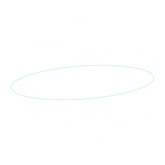

An AI agentic company
Infrastructure for agentic lifecycles.
OpenEXA builds the end-to-end infrastructure on which swarms of domain-specific AI agents run the world’s high-value lifecycles.
Not tasks. Lifecycles.
A lifecycle runs from signal to record.
Eight layers. One autonomous stack.
The top four layers decide; the bottom four only execute.
5,000–50,000 agents. One job each.
Agents propose; the Execution Council approves or rejects every proposal before code executes.
ETF creation and redemption. Live.
Six lifecycles. One is live.
Trillions sit in 17,000 ETFs.
Financial markets & insurance
International trade · letters of credit
Asset securitization · MBS / ABS
Wholesale energy settlement
Semiconductor manufacturing
Pharmaceutical & aerospace
Beyond Lifecycle 01: roadmap intent
Take the stack apart.
Signal intelligencePerceive
Model layerReason
Domain-specific agentsAct
Execution CouncilGovern
The boundary
Above Intelligence decides.
Below Execution is deterministic.
Routing layerOptimize
Execution layerOrchestrate
MCP serverConnect
Authentication layerPermit
Brokers · Clearing · OTC · Venues · Counterparties
Lifecycle 01, gate by gate.
Tighten the Council and watch what it rejects.
- Proposal
- Settled
- Rejected
- Record
- 01 Signal
- 02 Predict
- 03 Decide
- 04 Approve ·
- 05 Execute
- 06 Settle
How far above the floor, we do not publish.
Broker-confirmed, from a limited proof-of-concept period on live capital; not a forecast.
90% of cost and risk, eliminated.
- Cost of carry
- Interest on working capital
- Counterparty risk
- Settlement & credit exposure
- Technology
- Infrastructure, routing, reconciliation
- Management
- Research, oversight, operations
Try to change the past.
Edit any record and watch every one after it stop verifying.
Genesis · previous hash 00000000
- 01A-0412PROPOSEDlifecycle L-01 · next step
- 02A-0412VALIDATEDschema ok · inputs complete
- 03COUNCILAPPROVEDpolicy v7 · scoped action
- 04A-0412SUBMITTEDregistry tool · key 9f3c
- 05A-0412RECEIVEDsource receipt attached
- 06A-0412EXECUTEDaction complete · result stored
- 07A-0891RECONCILEDsource receipt ↔ internal record
- 08A-0412SETTLEDconfirmed · appended · chained